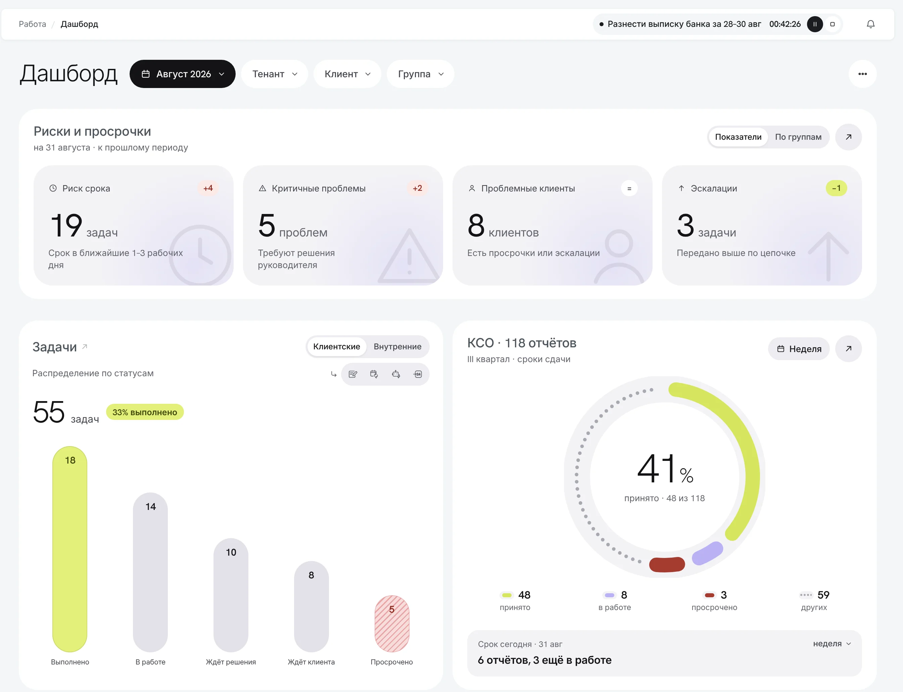

Дашборд руководителя
Смотреть решение ↓
Риски до срокаПровалиться в списокЗадачи по статусамСдача отчётности- Риски до срока
- Провалиться в список
- Задачи по статусам
- Сдача отчётности
Коротко
- Продукт
- B2B SaaS для бухгалтерских компаний: задачи, отчётность, клиенты, чаты, биллинг
- Моя роль
- Product Designer: исследование, архитектура, презентация руководству и клиентам, прототипы
- Статус
- Реализовано, используется сотрудниками
Контекст
Платформа помогает бухгалтерским компаниям вести клиентов: задачи по каждому клиенту, сдачу отчётности, переписку и биллинг. У одного бухгалтера до тридцати фирм, и у каждой свой календарь платежей, уведомлений и деклараций.
Работа в платформе была собрана из задач: реестр, чек-лист, автозадачи по расписанию. Отчётность перед ведомствами жила в отдельном разделе со своим календарём.
Ведёт десятки клиентов и должен понимать, что сдать сегодня, что можно сделать заранее и кому ответить.
Следит за своими клиентами и бухгалтерами: кто что сдал, где не успевают.
Смотрит на все группы и всех клиентов сразу и хочет узнавать о проблемах до срока, а не после.

Ключевое решение
Дашборд руководителя: проблемы видны до срока, из каждого блока можно провалиться в список.
Руководитель компании узнавал о проблемах после срока: чтобы понять, что происходит, приходилось обходить несколько разделов.
Один экран из блоков, и каждый отвечает на свой вопрос: что горит, как идут задачи и отчётность, выполняет ли производство KPI, кто перегружен, на каких клиентах компания теряет деньги. Из блока можно провалиться в список, из которого он посчитан.
Блоки открывают списки, а не хранят свои копии данных, поэтому числа на дашборде и в разделах не расходятся.


Результат
Я сама подготовила презентацию и показала её директору и клиентам. Руководство согласовало переход на новую архитектуру, виджеты обоих дашбордов мы перестроили: в кейсе показана новая версия.
Архитектура раздела «Работа», навигация, дашборды двух ролей, чек-лист, канбан
Переход на новую архитектуру после презентации директору и клиентам
Раздел и дашборды в работе у сотрудников
Пока нет: метрик после запуска ещё не собирали
Что дальше
Запас между двумя сроками и чек-лист должны показывать проблему до срока по закону.
Ведут ли бухгалтеры сдачу в чек-листе вместо своей таблицы.
Одна область вместо разрозненных разделов — меньше вопросов в поддержку.